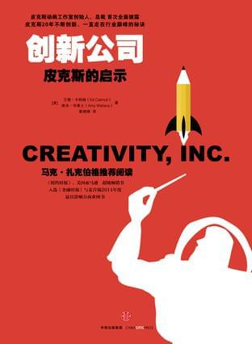

《创新公司》读书小结

两个月前无意看到这本书时本以为是皮克斯在动画领域的经验分享，阅读的过程中才发现作者对皮克斯如何创作动画作品的介绍并没有想象的那么多，反而看似都是一些很空很大的道理或结论，随着阅读的深入才发现本书的核心都是作者20多年来对于团队、公司管理方法的结晶，要领悟其中的精髓不容易。我在看完这本书后受益匪浅，很庆幸经历过2017大半年的坎坷后接触到了这样前沿的思想，同时也让我认识到过去存在的一系列问题。
阅读的过程中就记录了一些笔记，本打算阅读完后做个总结，可是在书的末尾作者已经帮我把书中谈到的管理理念提炼了出来。不过如作者所说:
如果把一个复杂的理念提炼成T恤上的标语，就可能会给别人造成误解，并且提炼的过程本身就已经导致理念内涵的流失。一句值得重复的箴言，其实离一句无意义的空话并不遥远。漂亮话并非一定能付诸实践。我一直认为这种所谓提炼的真理是不足为训的。
接下来我会直接引用作者总结好的理念，但在工作的过程中不会生搬硬套，而是在未来出现相似场景的时候多对比、多思考、多总结。所以请把每一条理念当作一个起点或一条往深层探寻的通道，而不要直接视作定论。
- 把高明的点子交予平庸的团队，点子就会毁在他们手上。把平庸的点子交予一支卓越的团队，那么团队要么就对点子进行改进，要么就是将点子推翻，提出更好的构想。也就是说，如果你能组建一支优秀的团队，那么他们就能给你好点子。
- 在聘用员工的时候，请给予他们发展的空间，让他们的技能能够有所提升。这些员工未来能够达到的水平，要比当下展示出来的技能更加重要。
- 永远记得：发掘那些比你聪明的人才。即便雇用强者看起来会造成潜在的威胁，也要冒这个险。
- 如果你的企业里有人不敢畅所欲言地提出建议，那么受损失的人是你。不要因为一个点子的来源不够“正统”就不重视，因为，灵感可以来自任何地方。
- 仅仅敞开心扉接受别人的点子是不够的。集思广益、广开言路，这是一个需要我们主动采取行动的长期积累的过程。作为管理者，你必须学会激发员工们的灵感，还应该时常激励他们开动脑筋为公司出谋划策。
- 在职场环境里，有诸多导致大家不能坦诚相见的障碍。你的任务就是去挖掘并扫除这些障碍。
- 与你意见相左的人肯定有他自己的理由。你需要去理解对方观点背后的道理。
- 如果你的企业中弥漫着一股恐惧感，那么这背后定有原因。我们的任务有三：一是找出原因所在；二是把原因弄清楚；三是把这原因根除。
- 想要驳倒反对意见，最有效的利器就是对自己观点的笃信。
- 通常来说，在抒发可能会引起争议的观点时，大家都会有些顾虑。而智囊团会议、审片会、事后讨论会以及点评日都是鼓励大家勇于直抒己见的方式。这些鼓励自我评估的方式，都是我们为让大家说真话所做的努力。
- 如果大家在走廊里要比在会议室里更容易说真话，那你就有麻烦了。
- 许多管理者都觉得，如果自己没有对消息掌握优先权或是在会议上被搞得猝不及防，就表示自己没有得到管理者应得的尊重。拜托，别这么斤斤计较好吗？
- 想要轻描淡写地低调处理问题，可能会让别人觉得你要么是在回避问题，不坦诚，要么就是无知或漠不关心。把问题与大家分享不失为一种团结人心的方法，这样做能让员工觉得自己是企业中的一分子。
- 我们对成败所下的第一结论通常都是错误的。只看结果而忽略过程的评估方法是会造成误导的。
- 不要天真地认为只要能规避错误，你就不必费心纠正错误了。实际上，规避错误的代价往往要比纠正错误的代价更惨重。
- 变化和不确定因素皆是人生的组成部分。我们不应抗拒变化，而应该磨炼在意外发生时迅速恢复的能力。如果你不能时刻准备揭露和探索那些不可见的因素，那么你就不能成为一名合格的领导者。
- 管理者的任务并非规避风险，而是营造一个让员工能够安全承担风险的环境。
- 失败不一定是坏事。实际上，失败一点儿都不能算是坏事，而是做新尝试时必然出现的一种结果。
- 信赖他人并不代表你相信此人不会犯错，而是在他犯错时你仍然信赖他。
- 在遇到问题时，负责实施计划的人必须拥有最终决定权，也就是说，他们不必得到上级批准就可以制定相应决策。寻找问题以及解决问题是每个员工的责任，每个员工都应该拥有暂停流水线的权力。
- 事事都顺利进行是不可能的。如果以此为目标，会让你以员工所犯的错误作为评判标准，而忽略了他们解决问题的能力。
- 不要妄想等到事事完美再公之于众。早些与人分享，多多与人分享。作品在完成之时会绽放光彩，但是在制作过程中却只是丑小鸭。
- 一家企业的沟通体制不应成为组织结构的翻版，人与人的交流不应有等级的阻隔。
- 切忌制定过于烦冗的规矩。规矩的确可以为管理者减轻负担，但也会为其余95%的人带来羁绊。不要为了5%的人的利益而设置规矩，对于有违常理的行为单独处理就好。这虽然会加重管理者的工作量，但最终对企业的健康发展是有好处的。
- 有时，设定限制反而能激发创意。令人不适或看似不稳定的环境，或许能催生优秀的作品。
- 挑战那些极端困难的问题，能迫使我们用新的视角看问题。
- 一个组织要比构成组织的个人更容易停滞不前、难以改变。不要以为泛泛的协议就意味着改变。即便大家表面赞同改变，但想要让一支团队真正行动起来，是需要你实实在在付出心血的。
- 在运作良好的企业中，各部门的工作事项虽然存在差异，目标却是彼此相联的。如果只偏重单个部门的工作事项，那么大家的利益都会受损。
- 想要见证伟大，就必然经历一段不伟大的平庸，这个道理有些人是不能理解的。在创意环境中，管理者的任务就是捍卫新生的构思不受这些人的摧残。放眼未来，不要驻足过去。
- 新出现的危机并不一定意味着噩运，这些危机可以测验和彰显一家企业的价值所在。另外，解决问题的过程往往可以将员工们的心凝聚在一起，敦促大家将目光放在当下。
- 卓越、品质和优秀这三个词应该是通过付出而获得的，应由别人冠给我们，而不是由自己来宣称。
- 不要一不小心把稳定错当成了目标。平衡要比稳定来得重要。
- 不要将目标与方法混淆。我们应坚持不懈、不遗余力地通过优化、简化及提高效率等方式努力改进我们的工作方式，但这并非我们的目标。打造出优秀的产品才是我们的目标。